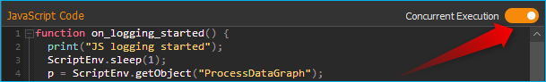
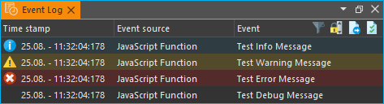

Verwendung von JavaScript
JavaScript-Unterstützung in CETONI-Elementen
Achtung
Das CETONI Elements Script System Add-on ermöglicht die Steuerung und Automatisierung von Prozessen mit Hilfe der Scriptsprache JavaScript. Überprüfen Sie die erstellten Skripte/Programme sowie die Parametereingaben, bevor Sie diese zum ersten Mal ausführen! CETONI übernimmt keine Haftung für direkte und/oder indirekte Schäden an Ihrem System oder externen Hard- und Softwarekomponenten, die durch die von Ihnen erstellten Skripte/Programme oder durch die Verwendung von Parametern, die für Ihre spezifische Anwendung nicht geeignet oder ungünstig sind, entstehen.
Die CETONI Elements Software verfügt über eine integrierte JavaScript-Engine. Diese Engine bietet eine Umgebung für die Ausführung von JavaScript-Code. Sie ermöglicht die Ausführung von JavaScript-Code in CETONI Elements-Skripten über eine entsprechende Skriptfunktion und bietet eine einfache Möglichkeit, die Skriptsprache JavaScript in Ihre CETONI Elements-Skripte einzubinden.
Dies gibt Ihnen eine zusätzliche Möglichkeit, Logik im Script-System zu implementieren und kann die Implementierung komplexer Berechnungen vereinfachen.
JavaScript-Konsole
Überblick über die JavaScript-Konsole
Das Skript-System bietet eine JavaScript-Konsole, mit der Sie ähnlich wie mit der Python-Konsole interaktiv JavaScript-Code eingeben und ausführen können. Sie können die JavaScript-Konsole über das Hauptmenü aufrufen ():
In der JavaScript-Konsole können Sie Befehle ausprobieren, den Zugriff auf Objekte testen und Fehler debuggen. Wenn Funktionsaufrufe in der Konsole funktionieren, können Sie diese in Ihrem Skript verwenden.
Das Kontextmenü der JavaScript-Konsole enthält die üblichen Befehle zur Textbearbeitung:

Sie haben drei Möglichkeiten, den Inhalt der JavaScript-Konsole zu löschen:
wählen Sie ❶ im Kontextmenü
klicken Sie auf das Mülleimer-Symbol ❷ in der Titelleiste
geben Sie in der Konsole den Befehl
clear()ein
Achtung
Gefahr von Fehlfunktionen oder Datenverlust !
Verwenden Sie die JavaScript-Konsole nicht in einem laufenden Experiment, Prozess oder während des normalen Betriebs bzw. produktiven Einsatzes. Falsche Eingaben oder Zugriffe auf Ressourcen können unter Umständen zu einem Absturz der Software führen.
Code-Vervollständigung
Die JavaScript-Konsole unterstützt Sie bei der Eingabe mit einer einfachen Code-Vervollständigung.

Im obigen Beispiel zeigt die Code-Vervollständigung eine Auswahl von Geräten an,
die mit Nemes beginnen.
Fehlermeldungen
Fehler, die beim Ausführen von Code in der JavaScript-Konsole auftreten, werden Ihnen als roter Text angezeigt:

Hilfe bekommen - getting help
Sie können den globalen Befehl help() verwenden, um mehr über die
verfügbaren Objekte und Funktionen herauszufinden. Wenn Sie den Befehl help()
ohne Parameter verwenden, erhalten Sie eine Liste der verfügbaren Funktionen und
Objekte:

Wenn Sie das globale Objekt über help(this) übergeben, dann erhalten Sie
eine Liste aller Standardmäßig vorhandene Objekte im
globalen Bereich:

Wenn Sie ein Objekt oder einen Funktionsnamen als Parameter an die Hilfefunktion
übergeben, z.B. help(ScriptEnv), erhalten Sie detaillierte Informationen
über das angegebene Objekt, wie z.B. Typ ❶, Eigenschaften ❷,
Methoden ❸ und Signale ❹:

Tipp
Verwenden Sie die Funktion help(object), um einen Überblick über die
Methoden und Eigenschaften eines bestimmten Objekts zu erhalten.
Zugriff auf Anwendungsobjekte
Das ScriptEnv-Objekt ist das zentrale Objekt für den Zugriff auf verfügbare
Geräte und Anwendungsobjekte. Verwenden Sie den Befehl help(ScriptEnv),
um eine Liste der verfügbaren Methoden und Eigenschaften dieses Objekts zu erhalten.
Verwendung von Geräteobjekten
Sie können auf Geräteobjekte mit der Funktion ScriptEnv.getDevice() zugreifen.
Um eine Übersicht der verfügbaren Gerätenamen zu erhalten, können Sie die Funktion
ScriptEnv.listDevices() aufrufen.
Die Code-Vervollständigung hilft Ihnen bei der Eingabe eines Gerätenamens, indem
sie Ihnen eine Liste der passenden Namen anzeigt (siehe Abbildung oben). Wenn Sie
die Funktion getDevice() ohne eine Zuweisung an eine Variable aufrufen,
können Sie in der Konsole sehen, ob der Aufruf erfolgreich war:
js> ScriptEnv.getDevice("Nemesys_S_1")
QtLabb::CNemesys4Pump(0x1e2136485a0, "Nemesys_S_1")
Um auf ein Gerät zuzugreifen, weisen Sie das Ergebnis des Aufrufs von getDevice()
einer Variablen zu. Im folgenden Beispiel weisen wir das Geräteobjekt für die
erste Nemesys S-Pumpe der Variablen pump zu:
js> pump = ScriptEnv.getDevice("Nemesys_S_1")
QtLabb::CNemesys4Pump(0x1e2136485a0, "Nemesys_S_1")
Jetzt können Sie die Funktion help(pump) verwenden, um einen Überblick
über die verfügbaren Methoden und Funktionen des Pumpenobjekts zu erhalten.
Tipp
Verwenden Sie die Funktion help(object), um einen Überblick über die
Methoden und Eigenschaften von Geräteobjekten zu erhalten.
Wichtig
Bei vielen Geräten ist der Zugriff auf Geräteeigenschaften und -methoden nur möglich, wenn die Anwendung mit den Geräten verbunden ist.
Achtung
Risiko von Fehlfunktionen / Datenverlust !
Über Gerätefunktionen können Sie auf Funktionen zugreifen, die in der grafischen Benutzeroberfläche nicht verfügbar sind. Testen Sie Funktionen immer außerhalb laufender Prozesse und nicht während des produktiven Einsatzes. Falsche Eingaben oder Zugriffe auf Ressourcen, Methoden oder Eigenschaften können zu Fehlfunktionen oder einem Absturz der Software führen.
Wenn Sie mit dem Gerät verbunden sind, können Sie nun über die Funktionen des Geräteobjekts auf die Gerätefunktionalität zugreifen. So können Sie beispielsweise einen Nachfüllvorgang für die Pumpe auslösen:
js> pump.refillSyringe()
oder den Pumpvorgang stoppen:
js> pump.stopPumping()
Der folgende Code zeigt, wie man das Geräteobjekt für die Nemesys S-Pumpe über das
ScriptEnv-Objekt erhält und dann einen Entleerungsvorgang der Spritze startet:
js> pump = ScriptEnv.getDevice("Nemesys_S_1")
QtLabb::CNemesys4Pump(0x1e2136485a0, "Nemesys_S_1")
js> pump.emptySyringe()
Verwendung von Anwendungsobjekten
Ähnlich wie bei Geräteobjekten können Sie auch auf Anwendungsobjekte zugreifen,
die keine Geräte sind. Verwenden Sie dazu die beiden Funktionen
ScriptEnv.getObject() und ScriptEnv.listObjects()
Der folgende Code zeigt, wie man das Anwendungsobjekt des grafischen Loggers über
das ScriptEnv-Objekt abruft und dann die Protokollierung startet:
js> plot = ScriptEnv.getObject("ProcessDataGraph")
QtLabb::CQCustomPlotDataLogger(0x1e2112dc280, "ProcessDataGraph")
js> plot.startLogging()
Tipp
Verwenden Sie die Funktion help(object), um einen Überblick über die
Methoden und Eigenschaften von Anwendungsobjekten zu erhalten.
Achtung
Risiko von Fehlfunktionen / Datenverlust !
Über die Funktionen der Anwendungsobjekte können Sie auf Funktionen zugreifen, die in der grafischen Benutzeroberfläche nicht verfügbar sind. Testen Sie Funktionen immer außerhalb laufender Prozesse und nicht während des produktiven Einsatzes. Falsche Eingaben oder Zugriffe auf Ressourcen, Methoden oder Eigenschaften können zu Fehlfunktionen oder einem Absturz der Software führen.
Standardmäßig vorhandene Objekte
Die JavaScript-Engine verfügt über eine Reihe von Standardobjekten, die in den
globalen Bereich integriert sind. Eines dieser Objekte ist das global object,
auf das mit dem Operator this zugegriffen werden kann. Um alle eingebauten
Objekte aufzulisten, müssen Sie nur die Funktion help mit
dem globalen Objekt wie folgt aufrufen: help(this).
Wenn Sie die Eigenschaften und Funktionen eines bestimmten eingebauten Objekts,
wie z.B. Math, sehen möchten, müssen Sie nur die Funktion help aufrufen
und dieses Objekt übergeben: help(Math). Eine detaillierte Liste der
eingebauten Objekte, die von der integrierten
JavaScript-Engine unterstützt werden, finden Sie in der Qt-Dokumentation:
https://doc.qt.io/qt-5/qtqml-javascript-functionlist.html
Eine ausführliche Dokumentation der eingebauten Objekte finden Sie in der JavaScript-Referenzdokumentation:
https://developer.mozilla.org/en-US/docs/Web/JavaScript/Reference/Global_Objects
JavaScript-Skript-Funktion
Übersicht über JavaScript-Skriptfunktionen
Die Skriptfunktion JExecute JavaScript Code ist in der Kategorie
Core Functions des Script Pool verfügbar:

Mit dieser Funktion können Sie JavaScript-Code im Skript-System der Anwendung ausführen. Wenn Sie die Funktion in Ihr Skript einfügen, sehen Sie den ursprünglichen JavaScript-Code im Konfigurationsbereich.
// Implement your script logic in this function
// Avoid blocking function calls
function main() {
return ScriptEnv.FINISH;
}
Wenn das Skript ausgeführt wird, wird es von der JavaScript-Engine geladen, und
dann wird die Funktion main() aufgerufen. D.h. diese Funktion ist die
Hauptfunktion des Skripts und die Logik sollte dort implementiert werden.
Tipp
Alle Optionen, die Sie in der JavaScript-Konsole für den Zugriff auf Geräteobjekte und Anwendungsobjekte haben, sind auch in der Skriptfunktion verfügbar.
Jede Skriptfunktion verwendet ihre eigene JavaScript-Engine-Instanz. Dies ermöglicht die Verwendung von JavaScript-Funktionen in parallelen Sequenzen.
JavaScript Editor
Die JavaScript Skript Funktion verfügt über einen JavaScript Code Editor, der Sie beim Schreiben von JavaScript Code unterstützt.

Der Editor verfügt über die folgenden Funktionen:
Syntax-Hervorhebung für JavaScript-Code ❶
eine einfache Code-Vervollständigung
Code-Faltung ❷
Zeilennummern ❸
Undo / Redo-Funktionalität ❹
Einige Funktionen des Editors sind über das Kontextmenü zugänglich, andere Funktionen sind über Tastaturkürzel abrufbar. Hier sind einige der Funktionen:
Aktion |
Tastaturkürzel |
|---|---|
Schriftgröße erhöhen |
Strg + + |
Schriftgröße verkleinern |
Strg + - |
Schriftgröße auf Standard zurücksetzen |
Strg + 0 |
Ausgewählten Code-Block einrücken |
Tab |
Ausgewählten Code-Block wieder einrücken |
Umschalt + Tab |
Rückgängig machen |
Strg + Z oder Kontextmenü |
Wiederholen |
Strg + Y oder Kontextmenü |
Wichtig
Die Bearbeitung des JavaScript-Quellcodes ist nur möglich, wenn das Skript nicht läuft. Sobald das Skript gestartet wurde, ist die Bearbeitung des Quellcodes deaktiviert. Im Falle eines Fehlers müssen Sie das Skript über die Schaltfläche Terminate Script beenden, bevor Sie den JavaScript-Code bearbeiten können.
Implementierung der Funktionslogik in main()
Bei der Implementierung des Skripts in main() sollten Sie darauf achten,
keine blockierenden Funktionen oder blockierende Wartezeiten zu verwenden.
Normalerweise führt die JavaScript-Engine den JavaScript-Code im Haupt-Thread
der Benutzeroberfläche aus, und die Verwendung blockierender Funktionsaufrufe
kann alle Aktualisierungen der Benutzeroberfläche und die Hauptereignisschleife
blockieren.
Wichtig
Verwenden Sie keine blockierenden Funktionsaufrufe, um ein Blockieren des Haupt-UI-Threads zu vermeiden.
Wenn Sie komplexe Logik oder Zustandsautomaten in JavaScript implementieren wollen, sollten Sie die gleichzeitige Ausführung in einem Worker-Thread in Betracht ziehen. Um die gleichzeitige Ausführung zu aktivieren, können Sie den Kippschalter Current Execution einschalten. Lesen Sie mehr über diese Funktion im Abschnitt Nebenläufige Ausführung.
Anders als bei den Scriptfunktionen Set Variable oder
Create Variable ist
es hier nicht erlaubt, Variablenbezeichner (wie $Flow) oder Geräteeigenschaften
(wie $$Nemesys_S_1.ActualFlow) direkt im JavaScript-Quellcode zu verwenden.
Das heißt, der folgende Code ist falsch und ungültig:
function calculateFlow()
{
// Wrong - $Flow and $$Nemesys_S_1.ActualFlow are not defined
return $Flow + $$Nemesys_S_1.ActualFlow
}
Für den Zugriff auf Variablen müssen die Funktionen ScriptEnv.setVar() und
ScriptEnv.getVar() verwendet werden. Der Zugriff auf Gerätefunktionen ist
über ScriptEnv.getDevice() möglich. Der korrekte Weg, um die obige Funktion
zu implementieren, ist dieser:
function calculateFlow()
{
Flow = ScriptEnv.getVar("$Flow");
pump = ScriptEnv.getDevice("Nemesys_S_1");
return Flow + pump.ActualFlow;
}
Achtung
Es ist nicht erlaubt, Variablenbezeichner wie $Flow oder
Geräteeigenschaften wie $$Nemesys_S_1.ActualFlow direkt im
JavaScript-Quellcode zu verwenden.
Globale Werte mit Namen registrieren
Das ScriptEnv Objekt hat die Funktion setNamedValue()
Sie können diese Funktion verwenden, um einen bestimmten Wert mit einem
definierten Namen global für die aktuelle Skript-Engine-Instanz zu registrieren.
Sie können dann später die Funktion namedValue() verwenden, um einfach auf den
registrierten benannten Wert zuzugreifen. Dies ist z.B. dann praktisch,
wenn Sie auf bestimmte Objekte, wie z.B. Settings Dateien oder globale Einstellungen,
aus unterschiedlichen JavaScript Funktionen heraus zugreifen möchten.
So können Sie dann in einer JavaScript Funktion den Wert registrieren und dann
später aus anderen JavaScript Funktionen darauf zugreifen.
Tipp
Weitere Details finden Sie in der API Dokumentation der beiden Funktionen
ScriptEnv.setNamedValue()
und ScriptEnv.namedValue()
JavaScript Module importieren
Die JavaScript Engine erlaubt den Import eigener JavaScript Module aus dem
aktuellen Projektverzeichnis. Wenn Sie eigene Module verwenden, die Sie zusammen mit Ihrem
Projekt weitergeben oder ausliefern wollen, dann können Sie diese in den
Unterordner Scripts/JavaScript ihres aktuellen Projekts speichern.
Wenn Sie z.B. im Projekt JavaScript_Tutorial arbeiten, dann wäre der absolute
Pfad zu diesem Verzeichnis:
C:/Users/Public/Documents/QmixElements/Projects/JavaScript_Tutorial/Scripts/JavaScript
Module, die in diesem Ordner enthalten sind, können Sie dann über die import
Funktion des ScriptEnv Objektes importieren. Im folgenden Beispiel wird
im Scripts/JavaScript Ordner ein JavaScript Modul in der Datei
test.js mit folgendem Inhalt erstellt:
// module "test.js"
function cube(x) {
return x * x * x;
}
const foo = Math.PI + Math.SQRT2;
const graph = {
options: {
color: "white",
thickness: "2px",
},
draw() {
console.log("From graph draw function");
},
};
class Person {
constructor(firstName, lastName) {
this.firstName = firstName;
this.lastName = lastName;
}
getFullName() {
return `${this.firstName} ${this.lastName}`;
}
}
export { cube, foo, graph, Person };
In der JavaScript Script-Funktion, wird das Modul nun als MyModule
importiert und verwendet:
function main() {
ScriptEnv.import("test.js", "MyModule");
print(MyModule.foo);
print(MyModule.cube(3));
print(MyModule.graph.options.color);
const person1 = new MyModule.Person("John", "Doe");
console.log("Person: ", person1.getFullName());
return ScriptEnv.ScriptFinish;
}
Die JavaScript-Konsole sollte nach der Ausführung der Scriptfunktion die folgenden Ausgaben enthalten:
js>
4.555806215962888
27
white
Person: John Doe
Fehler bei der Skriptausführung
Wenn während der Ausführung eines Skripts Fehler auftreten, werden diese im Event Log angezeigt. Wenn Sie den Mauszeiger über die Fehlermeldung im Ereignisprotokoll bewegen, wird ein Hinweisfenster mit Details angezeigt:

In der Fehlermeldung erhalten Sie auch die Information, in welcher Zeile des Skripts ein Fehler aufgetreten ist. Dies hilft Ihnen, den Fehler im Skript-Editor zu finden und zu beheben.
Wichtig
Die Bearbeitung des JavaScript-Quellcodes ist nur möglich, wenn das Skript nicht läuft. Sobald das Skript gestartet wurde, ist die Bearbeitung des Quellcodes deaktiviert. Im Falle eines Fehlers müssen Sie das Skript über die Schaltfläche Terminate Script beenden, bevor Sie den JavaScript-Quellcode bearbeiten können.
JavaScript-Code debuggen
Wenn Sie eine Skriptfunktion mit JavaScript entwickeln, gibt es verschiedene Möglichkeiten, Fehler zu suchen und zu debuggen. In den folgenden Abschnitten wird beschrieben, wie Sie die JavaScript-Konsolen-API verwenden können, um Ihren JavaScript-Code zu debuggen.
Funktion |
Beschreibung |
|---|---|
Verwenden Sie Zum Beispiel: function f(a, b) {
print("a is ", a, "b is ", b);
}
|
|
Log |
Verwenden Sie Zum Beispiel: function f(a, b) {
console.log("a is ", a, "b is ", b);
}
|
Assert |
Zum Beispiel: function f() {
var x = 12
console.assert(x == 12, "This will pass");
console.assert(x > 12, "This will fail");
}
|
Timer |
Zum Beispiel: function f() {
console.time("wholeFunction");
console.time("firstPart");
// first part
console.timeEnd("firstPart");
// second part
console.timeEnd("wholeFunction");
}
|
Trace |
|
Count |
Zum Beispiel: function f() {
console.count("f called");
}
|
Exception |
|
Zusätzlich haben Sie in der Software die Möglichkeit die ScriptEnv.log()
Funtion zur Ausgabe von Nachrichten im Event-Log zu verwenden. Der Vorteil
dieser Funktion ist, dass Sie als Parameter zusätzlich einen Log-Level und eine
Quelle Source angeben können, die dann im Event-Log ausgegebn wird.
Im folgenden Beispiel, werden in der JavaScript Funktion vier Log-Nachrichten mit unterschiedlichem Level ausgegeben:
function main() {
ScriptEnv.log(ScriptEnv.LogInfo, "Test Info Message", "JavaScript Function");
ScriptEnv.log(ScriptEnv.LogWarning, "Test Warning Message", "JavaScript Function");
ScriptEnv.log(ScriptEnv.LogError, "Test Error Message", "JavaScript Function");
ScriptEnv.log(ScriptEnv.LogDebug, "Test Debug Message", "JavaScript Function");
return ScriptEnv.ScriptFinish;
}
Dieser Code führt im Event-Log zu folgenden Log-Ausgaben:
Wichtig
Nachrichten mit dem Log-Level ScriptEnv.LogDebug werden nur ausgegeben,
wenn der Debug-Modus aktiv ist.
Nebenläufige Ausführung
Normalerweise wird der JavaScript-Code im Haupt-Thread der Benutzeroberfläche ausgeführt. Wenn Sie lang laufenden JavaScript-Code mit blockierenden Funktionsaufrufen oder längeren Verzögerungen implementieren möchten, sollten Sie die gleichzeitige Ausführung in einem eigenen Worker-Thread in Betracht ziehen, um eine Blockierung des Haupt-UI-Threads zu vermeiden. Um die gleichzeitige Ausführung zu aktivieren, können Sie die Option Concurrent Execution aktivieren.
Wenn der JavaScript-Code nebenläufig ausgeführt wird, ist es möglich, die
JavaScript-Skriptfunktion zu unterbrechen, wenn die Skriptausführung angehalten
wird. Der Nachteil der gleichzeitigen Ausführung ist, dass es nicht sicher ist,
auf Methoden und Eigenschaften von UI-Objekten zuzugreifen, die Sie über
ScriptEnv.getObject() erhalten haben.
Achtung
Es ist nicht sicher, Eigenschaften und Methoden von UI-Anwendungsobjekten zu verwenden, wenn der JavaScript-Code nebenläufig außerhalb des Haupt-UI-Threads ausgeführt wird. In diesem Fall kann der Zugriff auf UI-Objekte die Anwendung zum Absturz bringen.
Um Methoden des UI-Objekts aufzurufen, müssen Sie die Funktion
ScriptEnv.invoke() verwenden. Dadurch wird sichergestellt, dass die
aufgerufene Methode im Haupt-UI-Thread aufgerufen wird. Das folgende Beispiel
zeigt, wie man eine Funktion des grafischen Loggers und einer Pumpe mit
ScriptEnv.invoke() aufruft:
function main()
{
pump = ScriptEnv.getDevice("Nemesys_S_1");
ScriptEnv.invoke(pump.generateFlow, [-0.01]);
graph = ScriptEnv.getObject("ProcessDataGraph");
ScriptEnv.invoke(graph.startLogging, []);
}
Die folgende Tabelle zeigt die Vor- und Nachteile der beiden Ausführungsarten, um Ihnen die Entscheidung zu erleichtern, welche Ausführungsart Sie verwenden sollten:
Ausführung im UI-Thread |
Gleichzeitige Ausführung |
|
|---|---|---|
Zugriff auf UI-Objekte |
ja |
nur über |
Blockierende Funktionsaufrufe |
nein - blockiert UI-Thread |
ja |
Unterbrechbar |
nein |
ja |
Geeignet für |
kurze Skripte oder Berechnungen |
komplexe Skripte mit blockierenden Funktionsaufrufen und Verzögerungen |
Zugriff auf Signale und Slots in Skripten
Die eingebettete JavaScript-Engine bietet die Möglichkeit, Signale und Slots zu verwenden. Signale werden von einem Objekt ausgesendet, wenn sich sein interner Zustand in irgendeiner Weise geändert hat. Ein Slot wird aufgerufen, wenn ein mit ihm verbundenes Signal ausgegeben wird. Slots sind normale Funktionen und können normal aufgerufen werden; ihre einzige Besonderheit ist, dass Signale mit ihnen verbunden werden können. Wenn Sie eine Verbindung zu einem Signal herstellen, kann der Empfänger ein regulärer Slot eines anderen Objekts oder eine JavaScript-Funktion sein. Der häufigste Fall ist, dass Sie das Signal mit einer anonymen Funktion verbinden:
pump.dosageFinished.connect(function() {
console.log('dosage finished!');
});
Wenn Sie die Verbindung rückgängig machen wollen, müssen Sie die Funktion in einer Variablen speichern:
function dosageFinished() {
console.log('dosage finished!')
}
pump.dosageFinished.connect(dosageFinished);
//...
pump.dosageFinished.disconnect(dosageFinished);
Sie können das Signal auch mit einem Signal oder Slot eines anderen sichtbaren
Objekts verbinden. Im folgenden Beispiel verbinden wir das Signal
dosageFinished von pump2 mit dem Slot stopPumping von pump1.
Dadurch wird pump1 automatisch gestoppt, wenn pump2 anhält:
pump1 = ScriptEnv.getDevice("peRISYS_S_1");
pump2 = ScriptEnv.getDevice("peRISYS_S_2");
pump2.dosageFinished.connect(pump1.stopPumping)
Das folgende Beispiel ist etwas komplexer und zeigt, wie die gleichzeitige Ausführung zusammen mit einer Signalverbindung verwendet werden kann.
1function onDosageFinished() {
2 print("onDosageFinished");
3 ScriptEnv.leave();
4}
5
6// Implement your script logic in this function
7// Avoid blocking function calls
8function main() {
9 pump = ScriptEnv.getDevice("Nemesys_S_1");
10 if (typeof ScriptEnv.Initialized == "undefined") {
11 ScriptEnv.Initialized = true;
12 print("Connecting signal")
13 pump.dosageFinished.connect(onDosageFinished);
14 }
15 pump.aspirate(0.01, 0.01);
16 return ScriptEnv.KEEP_RUNNING;
17}
Der Code in den Zeilen 10 bis 14 verbindet das Signal dosageFinished der
Pumpe mit der JavaScript-Funktion onDosageFinished.
if (typeof ScriptEnv.Initialized == "undefined") {
ScriptEnv.Initialized = true;
print("Connecting signal")
pump.dosageFinished.connect(onDosageFinished);
}
Die umgebende Prüfung if (typeof ScriptEnv.Initialized == "undefined")
stellt sicher, dass es nur eine Verbindung gibt, wenn die Funktion mehrmals
aufgerufen wird. Wenn wir diese Prüfung nicht verwenden, wird bei jedem Aufruf
der Funktion eine neue Verbindung erstellt.
In den nächsten beiden Zeilen wird die Pumpenansaugung gestartet und die
Skriptfunktion main() gibt ScriptEnv.KEEP_RUNNING zurück, um
anzuzeigen, dass die Skriptausführung nicht beendet werden soll, wenn die
Hauptfunktion beendet ist.
pump.aspirate(0.01, 0.01);
return ScriptEnv.KEEP_RUNNING;
Das Skripting-System bleibt in dieser Skriptfunktion, bis die Pumpe die Dosierung
beendet hat. In diesem Fall wird die JavaScript-Funktion onDosageFinished()
aufgerufen.
function onDosageFinished() {
print("onDosageFinished");
ScriptEnv.leave();
}
Die Funktion gibt eine Meldung auf der Konsole aus und ruft
ScriptEnv.leave() auf, um der Skriptfunktion zu signalisieren, dass die
Funktion beendet ist und die nächste Skriptfunktion ausgeführt werden kann.
Dieses Beispiel zeigt, wie man eine länger laufende Aufgabe ausführt und die
Skriptfunktion beendet, wenn die Aufgabe beendet ist.
API-Referenz
ScriptEnv
Das ScriptEnv-Objekt ist das zentrale Objekt für den Zugriff auf
verfügbare Geräte und Anwendungsobjekte.
-
enum eMainFunctionReturnCode
The main function return code.
Normally the script execution finishes, if the JavaScript main() function is left. To indicate, that script execution should not finish, i.e. if you would like to wait for a certain event or signal, then your main function can return KEEP_RUNNING, to indicate, that you would like to stay in the current script function.
Example:
function main() { return ScriptEnv.ScriptFinish; }
Values:
-
enumerator ScriptFinish
finish current script function
-
enumerator ScriptKeepRunning
keep the JavaScript engine running and stay in current script
-
enumerator ScriptFinish
-
enum eProjectLocation
This enum describes the different locations that can be queried using projectPath() function.
The following example shows, how to get the data path of the current project:
Example:
ScriptEnv.projectPath(ScriptEnv.LocationData);
Values:
-
enumerator LocationProject
location of the current project directory
-
enumerator LocationConfigurations
location of the device configurations in the current project
-
enumerator LocationLog
location of the log files
-
enumerator LocationScripts
location of the current project script files
-
enumerator LocationPictures
location of the current project image files
-
enumerator LocationVideos
location of the current project video files
-
enumerator LocationData
location of data in the current project
-
enumerator LocationSettings
location where application can store settings and configuration files
-
enumerator LocationProject
-
enum eLogLevel
Log levels - keep this in sync with Core::CLogEvent::eType.
Values:
-
enumerator LogInfo
LogInfo.
-
enumerator LogWarning
LogWarning.
-
enumerator LogError
LogError.
-
enumerator LogDebug
LogDebug.
-
enumerator LogInfo
-
QStringList listDevices() const
Returns an array with all device names that can be accessed from JavaScript.
Use the device name when calling the
getDevice()function to get the corresponding device object.
-
QtLabb::Core::CDevice *getDevice(const QString &Name) const
Returns the device object for the given device name.
The device object provides access to device-specific functions and properties of this device. The device names are the names that are also used in the CETONI Elements script system to access devices or device properties.
Example:
pump = ScriptEnv.getDevice("Nemesys_S_1")
-
QStringList listObjects() const
Returns an array of all registered application objects that are not devices and that can be accessed from JavaScript, such as the graphical logger.
-
QObject *getObject(const QString &Name) const
Returns the object with the given object name
Name.Example:
plot = ScriptEnv.getObject("ProcessDataGraph")
-
QVariant getVar(const QString &VarName) const
Returns the value of a certain script variable.
The variable name needs to start with a dollar sign.
Example:
flow = ScriptEnv.getVar("$FlowRate")
-
void setVar(const QString &Name, const QVariant &Value)
Sets the value of the script variable to the given value.
Example:
ScriptEnv.setVar("$TargetPos", 25)
-
void setVars(const QVariantList Values)
Sets multiple script variables using a JavaScript array.
Example:
ScriptEnv.setVars(["$Value1", 0.5, "$Value2", 1.5])
-
void setNamedValue(const QString &Name, const QVariant &Value, bool ReplaceIfExists = true)
Registers a named value.
You can use this function to register a certain value with a given name globally to the current script engine instance. You can then use the namedValue() function later, to easily access the registered named value. If the value is already registered, it is overwritten with the new value given in Value If the value already exists and
ReplaceIfExistsisfalse, then the value is not replacedSiehe auch
-
QVariant namedValue(const QString &Name)
Returns a named value or an invalid variant, if no value with the given name is registered.
Siehe auch
-
void sleep(float Seconds)
Sleep for the given number of seconds without blocking the application main event loop.
Use this function for small delays only.
-
void leave()
Leave the current script function.
If your JavaScript main() function returned ScriptEnv.KEEP_RUNNING then you can use this function if you finished your JavaScript logic to signal the scripting system that the script system should leave the current script function and process the next one.
-
QJSValue invoke(const QJSValue &fun, const QJSValue &args)
Invoke the given function with the given parameters in the main UI thread.
This allows calling of UI objects methods from a JavaScript function running concurrently in its own thread. The first parameter
funis the function that should get invoked (likepump.generateFlow) and the second parameterargsis an JavaScript array with the function arguments (like[-0.01, 25]).Example:
pump = ScriptEnv.getDevice("Nemesys_S_1"); ScriptEnv.invoke(pump.generateFlow, [-0.01]); graph = ScriptEnv.getObject("ProcessDataGraph"); ScriptEnv.invoke(graph.startLogging, []);
-
QString projectPath(int Location) const
Returns the absolute path of a certain data location in the current project.
The following example shows, how to get the data path of the current project:
Example:
path = ScriptEnv.projectPath(ScriptEnv.LocationData); path += "/TestFile1.txt"; f = new QFile(path); f.open(QFile.ModeReadWrite); f.write("This is just a test test"); f.close();
Siehe auch
- Parameter:
Location – Location identifier (see eProjectLocation enum)
-
void import(const QString &RelativeFilePath, const QString &JsModuleIdentifier)
Import a JavaScript module from the
Scripts/JavaScriptsubfolder of the current project.The following example shows, how to register and use the JavaScript module
Scripts/JavaScript/TestModules/test.jsScriptEnv.import("TestModules/test.js", "MyModule"); MyModule.add(1, 2);
- Parameter:
RelativeFilePath – The module file path relative to
Scripts/JavaScriptJsModuleIdentifier – The name of the module in JavaScript
-
void log(int Level, const QString &Message, const QString &Source)
Log a message to the application event log.
This function is similar to the console.log, console.warn or console.error functions. But this function allows to provide an additional source parameter. If you use the console.log functions, then the event source in the event log is always the JavaScript script function that contains the log statement. If you would like to evaluate and print errors for a certain object or device, then it is better for the user if the source if the name of the device or object that caused the error. For example, if you have a device „Pure Water Station“ that signals the warning „Filter Cleaning Required“ then you can use this function to signal the warning:
ScriptEnv.log(ScriptEnv.LogWarning, "Filter Cleaning Required", "Pure Water Station");
- Parameter:
Level – The log level (ScriptEnv.LogInfo, ScriptEnv.LogWarning, ScriptEnv.LogError)
Message – The log message printed in the Event column
Source – The name of the error source printed in the Event source column
-
bool isDebugModeOn() const
Returns true, if the debug mode of the script engine is on.
QFile
Die Klasse QFile bietet eine Schnittstelle zum Lesen von und Schreiben
in Dateien. Sie ist ein Wrapper für die Klasse
QFile aus dem Qt-Framework.
-
class CScriptQFile : public QObject
Wrapper for QFile object.
The QFile class provides an interface for reading from and writing to files. The file name is usually passed in the constructor, but it can be set at any time using setFileName(). QFile expects the file separator to be ‚/‘ regardless of operating system. The use of other separators (e.g., ‚') is not supported.
Public Types
-
enum OpenModeFlag
This enum is used with open() to describe the mode in which a device is opened.
Values:
-
enumerator ModeNotOpen
-
enumerator ModeReadOnly
-
enumerator ModeWriteOnly
-
enumerator ModeReadWrite
-
enumerator ModeAppend
-
enumerator ModeTruncate
-
enumerator ModeText
-
enumerator ModeUnbuffered
-
enumerator ModeNewOnly
-
enumerator ModeExistingOnly
-
enumerator ModeNotOpen
Public Functions
-
void close()
Closes the file.
Calls flush() and closes the file. Errors from flush are ignored.
-
bool copy(const QString &newName)
Copies the file named fileName() to newName.
This file is closed before it is copied. If the copied file is a symbolic link (symlink), the file it refers to is copied, not the link itself. With the exception of permissions, which are copied, no other file metadata is copied. Returns true if successful; otherwise returns false. Note that if a file with the name newName already exists, copy() returns false. This means QFile will not overwrite it.
-
CScriptQFile(const QString &name = QString())
Constructs a new file object to represent the file with the specified name.
Example:
f = new QFile("C:/temp/test1.txt"); f.open(QFile.ModeReadWrite);
-
QString errorString() const
Returns a human-readable description of the last device error that occurred.
-
bool exists() const
Returns true if the file specified by fileName() exists; otherwise returns false.
-
QString fileName() const
Returns the name of the file.
-
bool isOpen() const
Returns true if the device is open; otherwise returns false.
A file is open if it can be read from and/or written to.
-
bool moveToTrash()
Moves the file specified by fileName() to the trash.
Returns true if successful, and sets the fileName() to the path at which the file can be found within the trash; otherwise returns false.
-
bool open(int mode)
Opens the file with the given open mode.
Returns true if successful; otherwise returns false.
Example:
f = new QFile("C:/temp/test1.txt"); f.open(QFile.ModeReadWrite);
-
QByteArray read(qint64 maxSize)
Reads at most maxSize bytes from the device, and returns the data read as a QByteArray.
This function has no way of reporting errors; returning an empty QByteArray can mean either that no data was currently available for reading, or that an error occurred.
-
QByteArray readAll()
Reads all remaining data from the device, and returns it as a byte array.
This function has no way of reporting errors; returning an empty QByteArray can mean either that no data was currently available for reading, or that an error occurred.
-
QByteArray readLine(qint64 maxSize = 0)
Reads a line from the device, but no more than maxSize characters, and returns the result as a byte array.
This function has no way of reporting errors; returning an empty QByteArray can mean either that no data was currently available for reading, or that an error occurred.
-
bool remove()
Removes the file specified by the fileName given.
Returns true if successful; otherwise returns false.
-
bool rename(const QString &newName)
Renames the file currently specified by fileName() to newName.
Returns true if successful; otherwise returns false.
If a file with the name newName already exists, rename() returns false (i.e., QFile will not overwrite it).
The file is closed before it is renamed.
If the rename operation fails, Qt will attempt to copy this file’s contents to newName, and then remove this file, keeping only newName. If that copy operation fails or this file can’t be removed, the destination file newName is removed to restore the old state.
-
bool seek(qint64 pos)
For random-access devices, this function sets the current position to pos, returning true on success, or false if an error occurred.
For sequential devices, the default behavior is to do nothing and return false.
Seeking beyond the end of a file: If the position is beyond the end of a file, then seek() will not immediately extend the file. If a write is performed at this position, then the file will be extended. The content of the file between the previous end of file and the newly written data is UNDEFINED and varies between platforms and file systems.
-
void setFileName(const QString &FileName)
Sets the name of the file.
The name can have no path, a relative path, or an absolute path. Do not call this function if the file has already been opened. If the file name has no path or a relative path, the path used will be the application’s current directory path at the time of the open() call.
-
qint64 write(const QByteArray &data)
Writes the content of byteArray to the device.
Returns the number of bytes that were actually written, or -1 if an error occurred.
-
enum OpenModeFlag